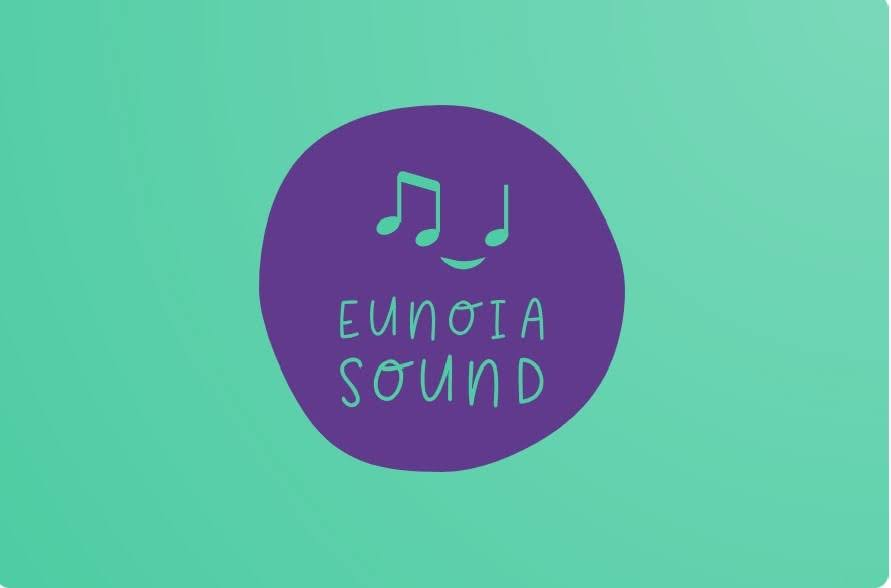

Profesion
La musica ha sido parte de mi profesion
Estudie ingeniera de sonido en el año 2009 y culmine la carrera en el año 2016. En la universidad de San buenaventura
me gradue y estudie una especializacion en produccion musical.
La ingenieria de sonido es un campo artistico y cientifico
ya que la acústica, la música, y la creatividad van siempre de la mano. Amo el diseño sonoro e interacturar con el cine.
Por otro
lado encontre una pasion en combinar el sonido, la musica , la creatividad con el manejo y desarrollo de software tal y como crear programas
para la produccion musical asi que el desarrollo de software ahora esta incluida en mi vida. Por ello los lenguajes que mejor se manejar son
Python, Java , JavaScript, HTML, y CSS.
Portafolio
Aqui encontraras todo mi portafolio relacionado con la ingeniera de sonido y el diseño sonoro.
Tambien algunas grabaciones que he realizado a lo largo de mi vida profesional enfocado a la grabación y mezcla.
Portafolio diseño sonoro
Portafolio mezcla
Desarrollo de software
Este espacio esta dedicado a todos los proyectos en los que me he dedicado a trabajar en diferentes lenguajes
Portafolio desarrollo fullstack
Eunoia sound
Eunoia sound nacio de una idea en la cual consistia en crear un espacio en donde la interacción cientifica
y matematica pudieran estar siempre de la mano. Este lugar cuyo nombre significa un "bonito pensamiento" esta dirigido a la
creación de música , diseño sonoro, edición de video y creación de aplicaciones web enfocadas a la música para todo tipo de
publico. La idea principal es crear un solo mundo en donde el BackEnd, FrontEnd y la ciencia de datos puedan ser uno solo mediante
demostraciones artisticas.

Gustos y pasiones
Mi vida entre lineas
Me gusta mucho la música y entre ello el rock, jazz, y blues. Debido a ello se tocar la guitarra y el piano
tambien componer musica al estilo clasico entra dentro de mis gustos preferidos. Viajar tambien me ayuda a liberarme
del mundo normal, amo comer cosas nuevas, conocer personas y culturas nuevas. Asi mismo dentro del desarrollo de software espero
dedicarme a la colaboración de programación relacionado a los video juegos, desarrollo de aplicaciónes enfocadas al audio